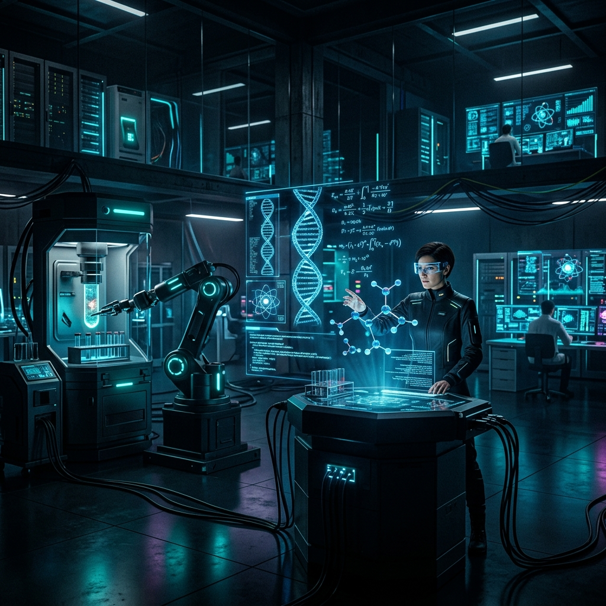
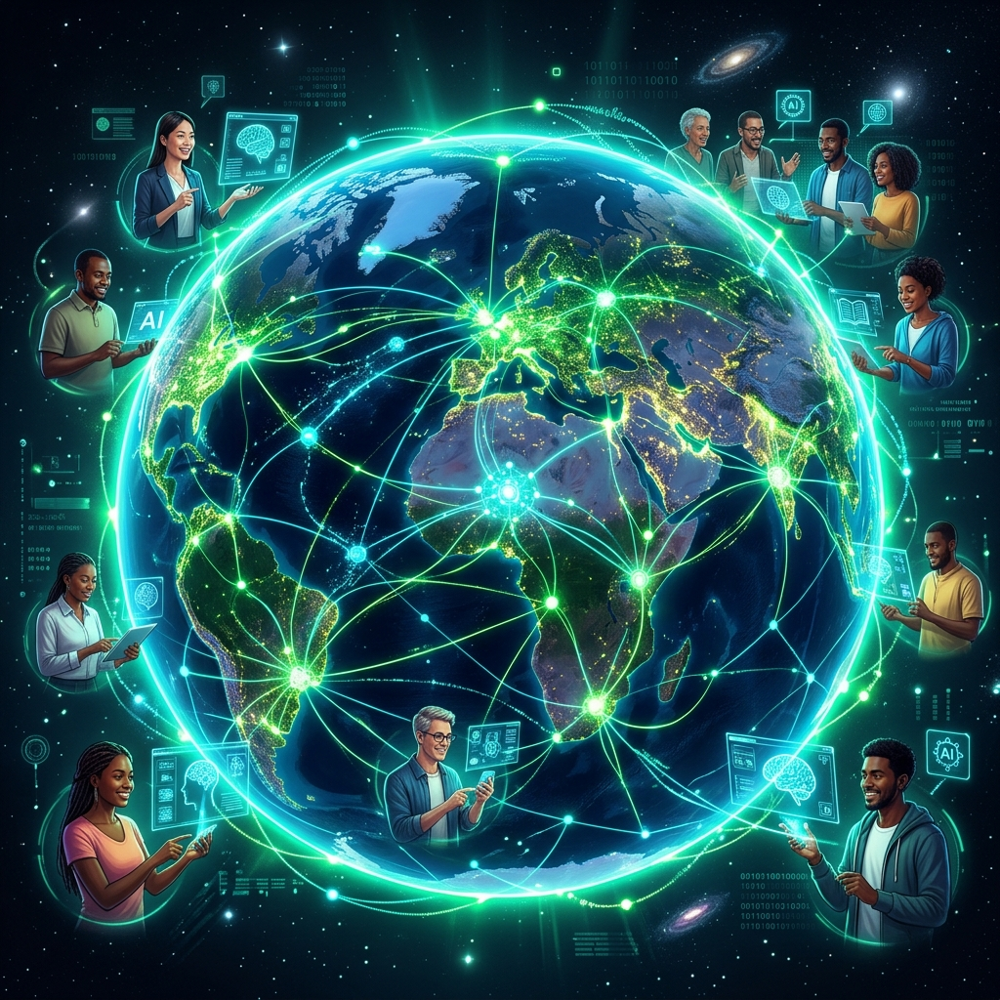

2026 AI 패러다임 시프트:
도구에서 '디지털 동료'로
실험의 시대를 넘어 실질적 임팩트의 시대로. 우리가 직면한 가장 강력한 지능의 잠재력과 그림자를 심층 해부합니다.
— 편집장 (Editor-in-Chief)
핵심 기술 트렌드 (Core Technologies)
에이전틱 AI의 부상
단순한 질의응답을 넘어, 복잡한 목표를 달성하기 위해 스스로 계획(Planning)하고 행동(Acting)하며 학습하는 AI 시스템입니다. 이제 AI는 소프트웨어 개발, 프로젝트 관리 등에서 자율적으로 움직이는 '디지털 동료'로 진화했습니다.

과학 연구의 가속화
AI가 논문을 요약하는 수준을 넘어, 물리학, 화학, 생물학 분야에서 가설을 생성하고 실험 장비를 직접 제어하며 기후 모델링 및 신소재 개발과 같은 과학적 혁신을 주도하고 있습니다.
무한한 가능성 (Possibilities)
인간-AI의 초협력
반복적인 작업의 완벽한 자동화를 통해 인간은 전략적 사고와 창의성 등 고차원적 문제 해결에 집중할 수 있게 되었습니다. 소규모 팀이 과거 대기업 규모의 인력이 필요했던 성과를 내고 있습니다.

전문 지식의 민주화
의료, 법률, 엔지니어링 등 고도의 전문성이 요구되는 분야에서 AI가 초기 진단 및 기획을 보조함으로써, 전 세계적인 의료 접근성 격차 및 정보 불평등을 해소하는 데 기여하고 있습니다.
리스크와 과제 (Risks & Challenges)
사이버 보안의 창과 방패
AI는 위협을 빠르게 탐지하는 강력한 방패인 동시에, 해커들에게 정교한 피싱, 적응형 멀웨어 등을 생성하게 하는 날카로운 창입니다. AI 기반의 자율 공격은 기존의 보안 체계를 무력화할 위험이 있습니다.

신뢰 검증과 환각의 최소화
과장 광고(Hype)와 실제 성능 간의 괴리가 기업의 가장 큰 골칫거리입니다. AI의 편향성, 오류(환각)를 통제하기 위한 투명한 평가 프레임워크(NIST 등)와 엄격한 거버넌스가 기업의 생존 필수 요소가 되었습니다.

인프라 경쟁과 지정학적 갈등
AI 모델 구동을 위한 막대한 전력 소모와 데이터 센터 확장이 환경 및 자원 문제를 낳고 있습니다. 또한 칩 확보, 데이터 주권을 둘러싼 국가 간 패권 경쟁과 수출 통제가 기술 블록화를 가속화하고 있습니다.

노동 시장의 재편성
생산성 향상의 이면에는 노동력 대체의 위협이 존재합니다. 실시간 'AI 경제 대시보드'가 등장할 정도로 고용 구조의 변화가 가파르며, 재교육 및 사회적 안전망 구축이 시급한 과제로 대두되었습니다.